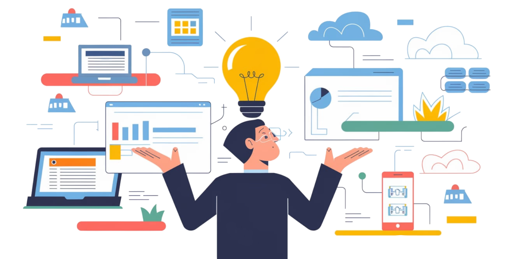

Astuces d'optimistation de votre éco-responsabilité
Nous avons regrouper une petite liste (non exhaustive) d'astuce pour vous, pour booster votre éco-responsabilité. Il a bien sûr d'autres actions que vous pouvez mettre en places mais voilà déjà quelques actions simple que vous pourrez mettre en place dans votre quotidien.
Privilégiez une connexion Wifi pour une consommation énergétique réduite
Pour réduire votre consommation d'énergie, privilégiez une connexion wifi plutôt que de vous connecter en 4G via le réseau mobile. En effet, une connexion wifi consomme environ 4 fois moins d'énergie, ce qui permet de diminuer votre empreinte carbone tout en restant connecté.
Éteignez votre appareil la nuit pour une batterie préservée et une consommation réduite
Pensez à éteindre votre appareil la nuit. Non seulement cela permet de préserver la batterie de votre appareil, mais cela réduit également votre consommation d'énergie. En plus d'éviter les notifications nocturnes qui pourraient perturber votre sommeil, cette pratique favorise une bonne humeur matinale et contribue à réduire votre impact environnemental.
Privilégiez la HD pour un moindre impact sur l'empreinte carbone
Lorsque vous regardez vos programmes préférés en streaming, optez pour une résolution HD plutôt que la 4K. La différence de qualité visuelle entre ces deux résolutions est légère, mais la consommation énergétique est significativement réduite en choisissant la HD. Cela permet de minimiser votre empreinte carbone tout en appréciant vos contenus préférés.
Faites le tri de votre cloud et optez pour le stockage sur disque dur
Prenez le temps de faire le tri dans votre cloud. Retournez aux sources en stockant vos données sur un disque dur, ce qui consomme environ 2 fois moins d'énergie que le stockage en ligne. Cette pratique simple et efficace vous permet d'optimiser votre consommation énergétique et de contribuer à la réduction de votre empreinte carbone.
Optez pour des équipements éco-responsables
Lorsque vous achetez de nouveaux appareils électroniques tels que des smartphones, tablettes ou ordinateurs, privilégiez ceux qui sont labellisés éco-responsables. Ces appareils sont conçus pour être plus économes en énergie et respectueux de l'environnement, ce qui contribue à réduire votre empreinte carbone.
Utilisez des adaptateurs de charge économes en énergie
Les adaptateurs de charge des appareils électroniques peuvent consommer de l'énergie même lorsque les appareils sont déconnectés. Optez pour des adaptateurs à haute efficacité énergétique qui réduisent la consommation d'électricité lorsqu'ils ne sont pas utilisés, ce qui vous permettra de faire des économies d'énergie.
Évitez l'impression inutile
Plutôt que d'imprimer des documents ou des fichiers numériques, privilégiez leur consultation en ligne ou leur stockage dans le cloud. L'impression consomme de l'énergie et utilise du papier, ce qui a un impact sur l'environnement. Privilégiez le numérique pour réduire votre consommation de ressources et préserver les arbres.
Pratiquez la dématérialisation des documents
Optez pour la dématérialisation des documents administratifs et des factures en les recevant et les envoyant par voie électronique. Cela réduit la consommation de papier, les coûts d'envoi et le transport associé, contribuant ainsi à préserver l'environnement.
Limitez le streaming en ligne
Le streaming de vidéos, de musique ou de jeux en ligne consomme beaucoup de bande passante et d'énergie. Pour réduire votre empreinte carbone, limitez votre temps de streaming ou utilisez des plateformes qui proposent des options de qualité vidéo adaptative, ajustant automatiquement la résolution en fonction de votre connexion internet.
Débranchez les câbles de chargeurs
En effet, même lorsqu'un appareil électronique est complètement chargé, le chargeur continue souvent de consommer de l'électricité s'il reste branché sur une prise de courant. Cette consommation d'énergie inutile, connue sous le nom de « consommation vampire », peut représenter une partie significative de votre consommation d'énergie totale au fil du temps.